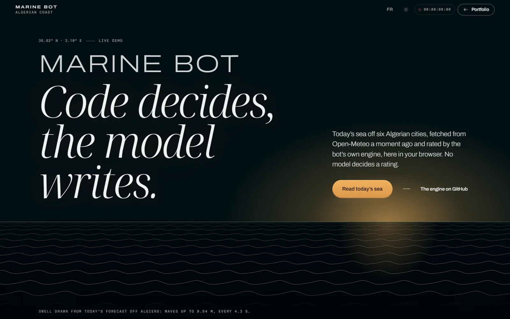
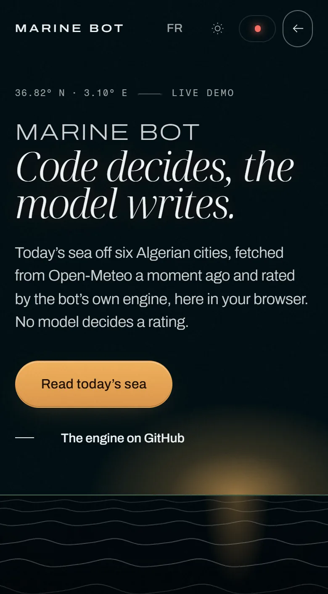
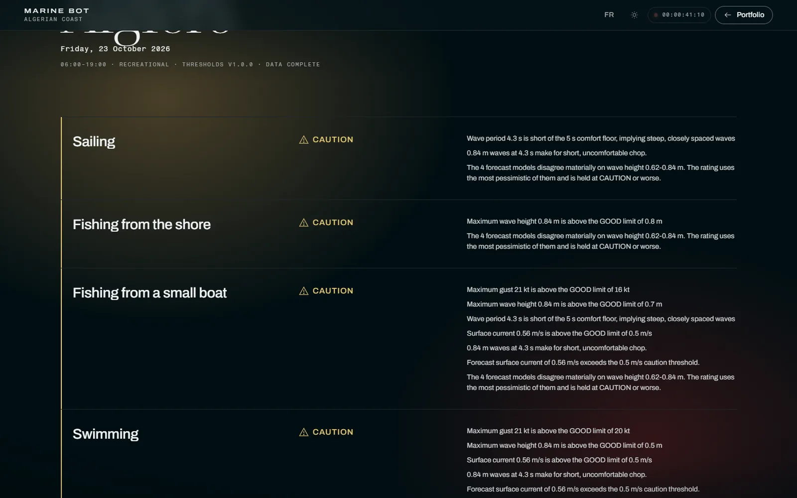
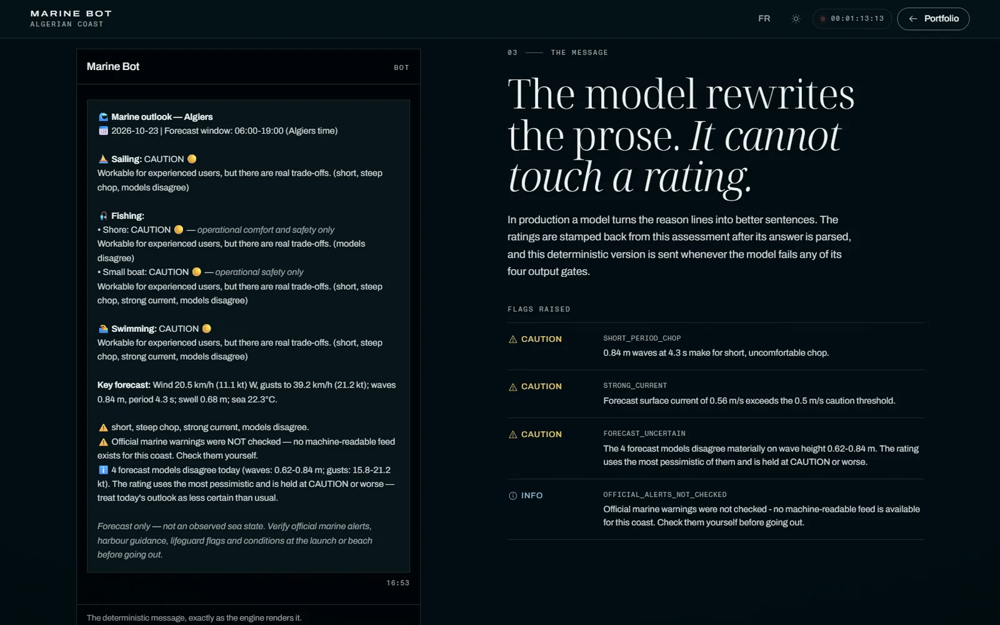

The forecast
Several weather models, the cautious reading kept.
For each point the engine asks several models for the same hours and keeps the highest waves, the shortest period and the strongest gusts. When they disagree, the rating holds at caution.
Telegram bot · AI · 2026
Algerian Coast Marine Bot Code decides, the model writes.
A Telegram bot that sends a daily sea-safety rating for six cities on the Algerian coast. Its engine rates the sea from real forecasts; a language model only rewrites the wording, never a rating.


6Points on the coast, each a few kilometres offshore
4Activities rated: sailing, two kinds of fishing, swimming
4Checks the model’s answer must pass, or the plain message goes out
Algerian Coast Marine Bot
What it does
The ratings
Four activities, one clear verdict each.
Sailing, fishing from the shore, fishing from a small boat and swimming, each rated with its reasons written out.
The guardrails
The model rewrites; the code stamps the ratings back.
A model turns the reason lines into better sentences. The ratings are copied back from the engine, and the plain message is sent whenever the model’s answer fails a check.
The honesty
It says what it did not check.
Algeria publishes no machine-readable marine warnings, so official alerts are reported as unchecked, never as clear.


Try it yourself
- Open the demo: the swell at the top is drawn from today’s forecast off Algiers.
- Pick a point on the coast and an experience level.
- Read the four ratings and their reasons, then the message exactly as the bot sends it.
- Scroll to the models: see where they disagree, and how that holds a rating.
My part
I wrote the engine, its thresholds and the bot. In production it runs on n8n with forecasts from Open-Meteo, checked against airport weather observations (METAR).
The live demo runs the same engine in your browser, on today’s forecast.
Built with
- JavaScript
- n8n
- Open-Meteo
- Telegram Bot API
- LLM, wording only
A forecast, not an observed sea state, and not a safety authority.
Contact
Have a project? Let’s talk.
Tell me what you need and I’ll reply on WhatsApp or by email. Also open to engineering jobs, internships and collaborations.